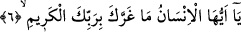

halde okuduğumuz âyetin sevkedilmesinden maksad, insanları günah işlemekten
alıkoymak ve itâata teşvik etmektir.
6. Ey insan! İhsanı bol rabbine karşı seni aldatan nedir?
“Ey insan!” hitabı bütün isyânkârları içine almaktadır. Buradaki “insan” kelimesiyle
sâdece özel bir kâfir kasdedilmemektedir. Çünkü bu cümle mücmel bir cümleyle
mufassal cümle arasında yer almaktadır. Bir başka ifâdeyle söylersek bu cümle az önce
okuduğumuz “insanoğlu gönderdiklerini ve geride bıraktıklarını bir bir anlar”
cümlesiyle biraz aşağıda onüçüncü âyette yer alan “iyiler şüphesiz nimet içindedirler”
âyeti arasında yer almaktadır. “Hayır, hayır doğrusu siz dini yalanlıyorsunuz”
şeklindeki dokuzuncu âyet ise bütün insanlara değil, sâdece onların içinde kâfirlere
şâmildir. Bu tıpkı şu örnekteki cümleye benzer: Herhangi bir aşiret içinden birisi bir
kişiyi öldürdüğünde araplar “benû fulân katelû zeyden/filanca oğulları Zeyd’i katletti”
derler. Örnek cümlede nasıl ki filan oğullarının hepsi değil de birisi katil ise üzerinde
durduğumuz dokuzuncu âyette de aynı şekilde dini yalanlayanlar muhatap olanların hepsi
değil içlerinden bazılarıdır. Dolayısıyla o âyeti bu şekilde anlamalıdır.
İmam Süheylî (rh.)’ın ifâdesine göre okuduğumuz âyette yer alan “ey insan” ifâdesi
ile Ümeyye b. Halef’e hitap olunmaktadır. Fakat bize göre bu ifâde genel anlamlı bir
ifâde olup hem o Ümeyye b. Halef’i ve hem de başka kâfirleri içine almaktadır.
Bazı âlimlerin ifâdesine göre bu âyet Velid b. Muğîra veya Esved b. Kilde hakkında
nâzil olmuştur. Esved bir gün Mekke vadisinde Peygamber Efendimiz’i yakalamak ister,
ancak buna fırsat bulamaz. Allah Teâlâ ona bu fırsatı vermez.
Zehratu’r-riyaz isimli eserde deniyor ki: Esved b. Kilde bir gün Peygamberimiz
(s.a.)’in kafasının tam ortasına vurur. Peygamberimiz adamı kaptığı gibi yere çalar.
Kilde: “Ya Muhammed el eman, el eman! Benden cefâ senden kerem! Ben asla sana
zarar vermeyeceğim” der. Bunun üzerine Peygamber Efendimiz (s.a.) herifi bırakır.
Âyetteki “İhsanı bol rabbine karşı seni aldatan nedir?” ifâdesi içinde yer alan “mâ”
soru edatıdır. Buradaki sorudan maksad, hitap edilen kişiyi kınamak ve azarlamaktır.
Bunları dikkate alarak âyete mânâ verirsek şöyle deriz: Ey insan! Seni aldatan, kerim
olan Rabbine karşı sana isyana cesaret veren ve O’nun cezâsına uğramayacağına dâir
sana güven hissi veren nedir? Oysa sen kendi önünde ceryan eden felaketleri ve ilerde
amellerini müşâhede edeceğin zaman meydana gelecek musîbetleri biliyorsun.
Âyetteki “aldatma” anlamına gelen “garra” fiiline gelince; arapçada “ğarrahu bi
fulân” dendiğinde bunun anlamı “filanca filanca kişiyi yüreklendirdi ve kendisi ona
karşı güvenilir bir kişi olmadığı halde kendisinden herhangi bir zarar gelmeyeceği
noktasında ona güven verdi” demektir. Bu âyette Allah’ın “kereminin/ihsanının bol